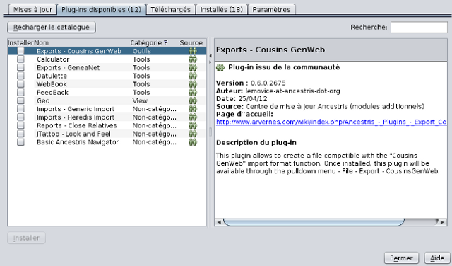

General info about plugins
"Plugins" (or modules) are non standalone programs, that "marry"
with Ancestris main program to add more features.
Installed plugins and available plugins
These are found in : "Tools -> Plugins". The number
between brackets in the 2nd and 4th tabs indicates then number of
plugins.
For each one, the right area will give you specific information.
Dowloanding and installing
To install one (or several) plugins, you just need a few clicks
from the "Available plugins (x)" tab.

- Click Check for newest to get an updated list.
To skip this stage : at the Settings tab, lower area, choose
"Automatically check for updates -> Check Interval -> Every Startup".
- Installation:
- check the box for the plugins you want. "Install" button
becomes active;
- click it and the window "Plugin installer" opens, with a
summary of the plugins you chose;
- confirm you intentions by clicking "Next". Another window
opens with the license agreement for the use of the plugins.
To carry on with the installation, you must accept the terms of
all licenses associated to the selected plugins;
- check the box, below at the left side, "I accept the terms
in all of the license agreements". Button "Install", becomes
active;
- click it. The plugins are downloaded. A window opens,
"Validation Warning", to let you know if there is, or not, a
signature for the plugins. Don't worry, you won't be taking
any risks, these plugins are certainly from the oficial page
of Ancestris;
- click "Continue".
The installation is over. In some cases, you will have to restart
the software before you can use the new plugins.
Uninstall a plugin
Open "Tools -> Plugins" again, this time, tab "Installed (x)".
- check the boxes of the plugins you want to uninstall. Button
"Uninstall" becomes active;
- click "Uninstall". The window "Plugin Installer" opens, with
a summary of the plugins you want to uninstall;
- Confirm your choice.
After uninstalling, you will have to restart Ancestris "immediately"
(preferable) or "later". Once selected, click "Finish".
Don't hesitate in testing the plugins, uninstalling is easy, quick
and complete.
You probably won't even want this.
You can find these explanations in a
video
available on Ancestris Wiki.
Attention, if you open this link here, you won't get the best
definition. It is preferable to copy the link and paste it on your
Web browser.